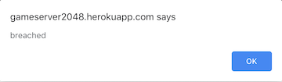
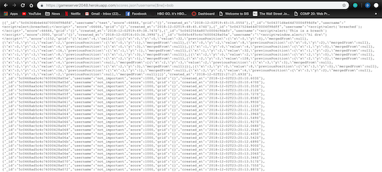
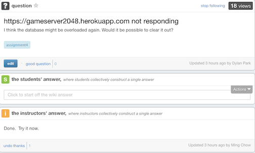
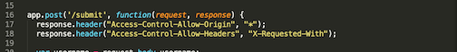

The product is a web application that submits and retrieves data regarding the top 10 players who have played the 2048 game on one's web server. Upon completion of the game, this application accepts user input for the username and stores this data along with the user's score and board placement in a database. The web application then allows for this data to be retrieved either through JSON or an HTML leaderboard. I was hired to look for any security vulnerabilities found within this code.
I used the curl tool to mimic user input and enter data points such as username and score. This allowed me to make an HTTP POST request to one's web server. In addition, I appended query strings to the URL to gain access to information.
| Issue | Location | Severity | Description | Proof of Vulnerability |
|---|---|---|---|---|
| Cross-Site Scripting | Found in the server.js file on lines 20-22. There is no line of code that strips out special characters allowing for script tags to be entered and executed. URL is https://gameserver2048.herokuapp.com/ | High - If discovered, anyone can send in code that will completely alter the functionality of the site. The coder will no longer have any control over their site and will be at the mercy of the hacker's code. | Using curl, I set username in the query string to be a script tag that allowed for an alert saying "breached" to display. XSS could have also been done by entering the same Javascript code in the prompt used to collect the username upon completion of the game. Curl command: curl -i --data "username=<script>alert('breached');<script>&score=66666&grid={}" https://gameserver2048.herokuapp.com/submit; |  |
| Injection Attack | Exists within the GET function for /scores.json in the server.js file. This code does not check for operators which makes the code vulnerable to injection attacks such as this. URL is https://gameserver2048.herokuapp.com/ | Medium - If the data on this site were more valuable, then this would be a much more severe error. However, since the only data that can be pulled are people's usernames and high scores, this is not too severe. | Using the URL https://gameserver2048.herokuapp.com/scores.json?username[$ne]=bob, I was able to get all the data for the JSON documents that did not have the username bob (essentially getting all the data currently in the database). This feature should only allow me to access one particular user's information. |  |
| Denial of Service Attack | Found in the server.js file on lines 20-22. There is no line of code that strips out special characters allowing for script tags to be entered and executed. URL is https://gameserver2048.herokuapp.com/ | High - This hack would prevent any other user from being able to access the application. | Using curl, I had a for loop execute a console.log 100,000 times and overload the database. This completely prevented the application from opening and required the clearing of the database. Curl command: curl -i --data "username=<script>for%20(var%20i%20=%200;%20i%20<%20100000;%20i++){console.log('hacked');}</script>&score=66666&grid={}" https://gameserver2048.herokuapp.com/submit; |  |
| Bad Coding Practice | Found in the server.js file on lines 17 and 18. | Medium - This poor coding practice exposes the application to certain security risks like those listed above. However, if our client takes the necessary precautions, the risks are preventable. | After some research and reading class notes, I realized that CORS opens an application up to security breaches due to the nature of what it does. It gives anyone access to download all of the data from your application and send requests to your application with few restrictions |  |
I would recommend that our client implement the solutions above in a timely manner. Currently, the code is vulnerable to Cross-Site Scripting, Denial of Service, and Injection Attacks, all of which can irreparably damage their application, data, and reputation. We offer the option to hire our services and resolve all security issues for $500.00.